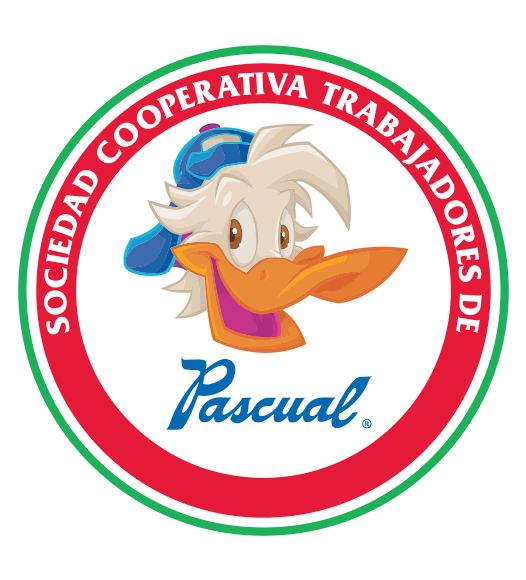

Inicio
Servicios
creacion
historial
Sabores
Submenu2
Submenu3
Submenu4
Acerca de
Logos Al Paso Del Tiempo
Sucursales
¿Cómo se hace?
Historia
Contacto

¡PASCUAL!
Pascual, S.A. fue fundada, a finales de los años 1930 y principios de los 1940, por Rafael Víctor Jiménez Zamudio. Los primeros productos que lanzó al mercado fueron paletas, después agua embotellada en garrafón y por último los refrescos Pascual.
Pascual Boing es una cooperativa refresquera mexicana. Esta empresa produce bebidas envasadas con marcas como Boing. Las instalaciones ocupan dos manzanas de la ciudad donde se fundó la empresa y emplea a más de 2000 trabajadores en la Ciudad de México. Estos dos bloques y los pozos de agua en ellos, han sido el centro de una disputa legal desde 1980 (42 años a la actualidad).
Su principal producto es una línea de bebidas no carbonatadas que contienen jugo o pulpa de fruta. Los sabores disponibles incluyen: mango, tamarindo, fresa, uva, manzana, naranja, guayaba, piña, guanábana, y durazno. También produce una línea de bebidas carbonatadas. La empresa consume alrededor de 20 mil toneladas de fruta anualmente y 24 mil toneladas de azúcar.[2] A finales de 2005, ante una solicitud de la organización no gubernamental Greenpeace, Pascual Boing certificó que en sus procesos no utiliza productos transgénicos.
mango
guayaba
fresa
piña
naranja
uva
manzana
durazno
PAIS
SABOR
HORA
MEXICO
MANGO
5:00 AM
COLOMBIA
DURAZNO
7:00 PM